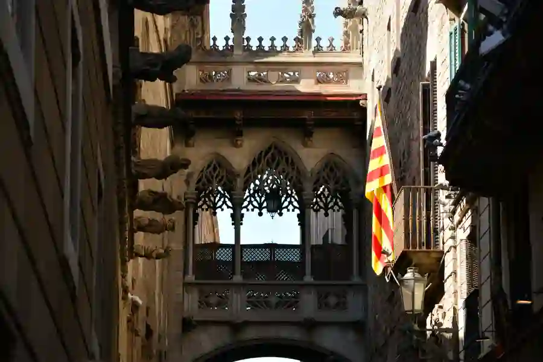
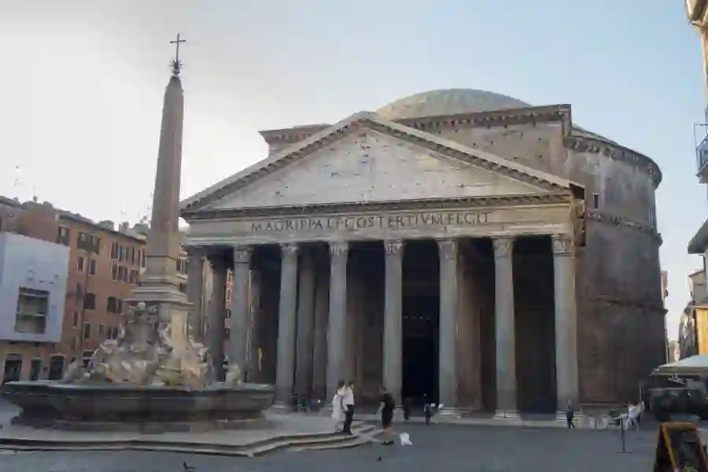
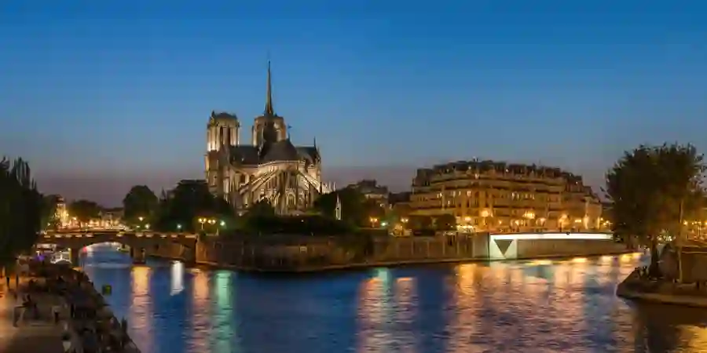
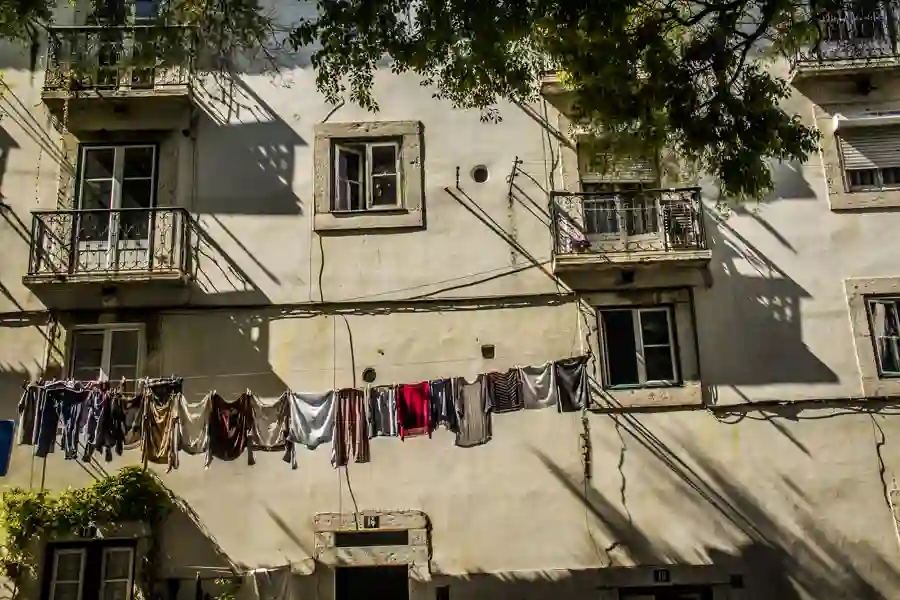
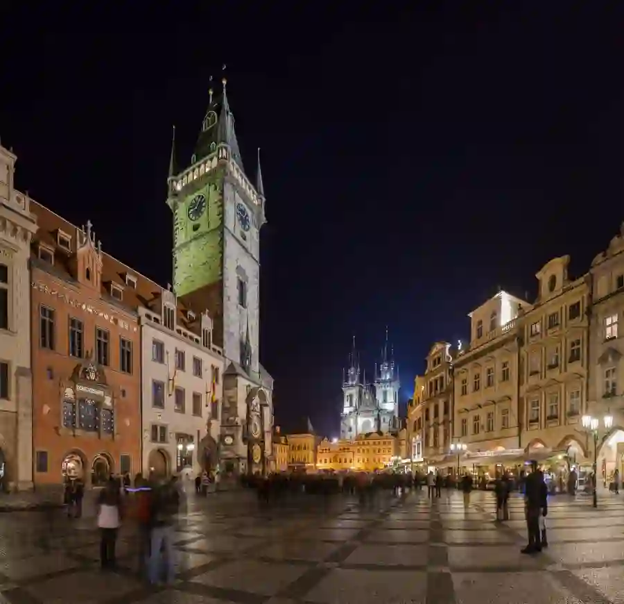
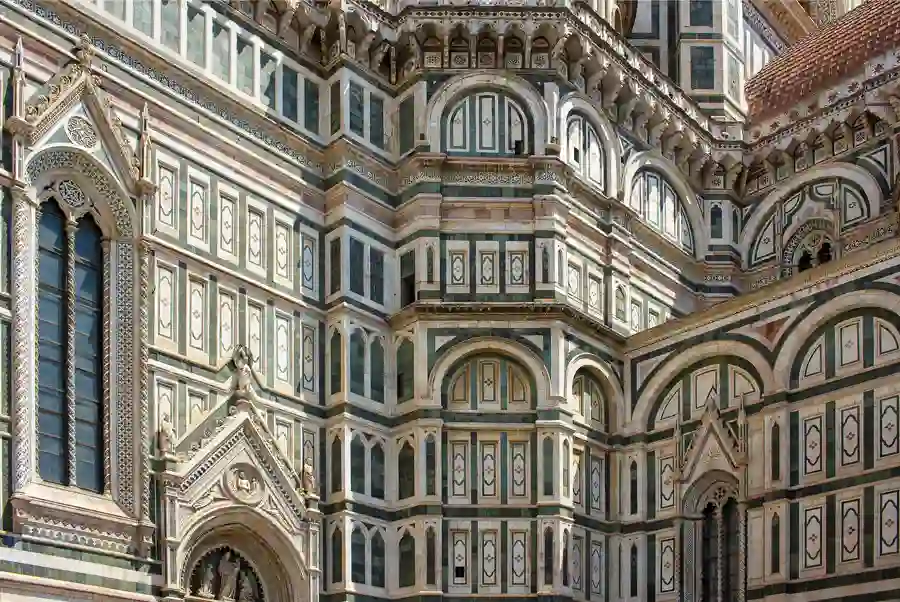
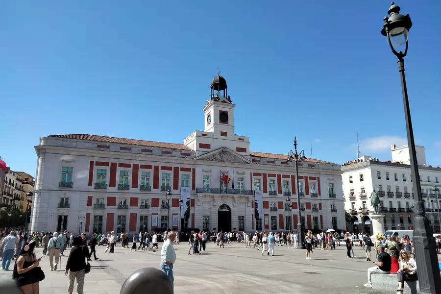
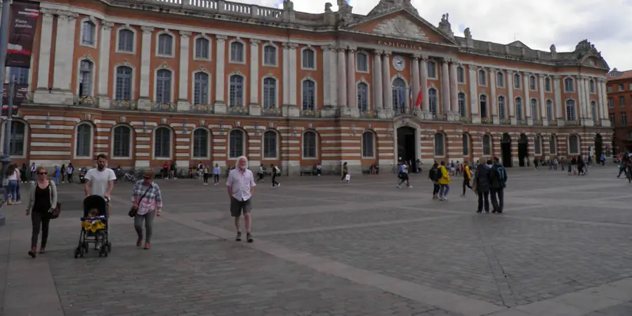
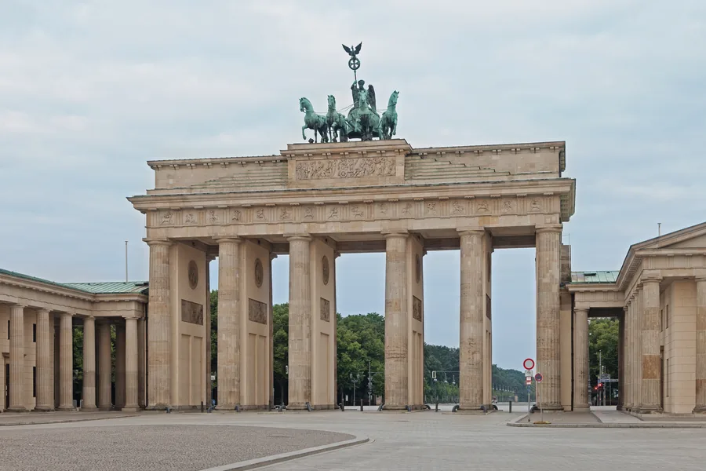

Escape rooms urbanos al aire libre
Sigue los vestigios.
Cada ciudad esconde una historia. Cada historia, un misterio. Recorre sus calles y rincones, descubre pistas ocultas a plena vista y resuelve los enigmas que lo destapan.
Cómo funciona
Elige ciudad y ruta
Selecciona la ciudad en la que quieres jugar y elige entre los recorridos disponibles.
Pide tu acceso
Ahora mismo todas las rutas son gratis: deja tu email y recibe el acceso para todo el equipo.
Camina, juega y aprende
Prepárate para salir a la calle a observar, pensar y resolver enigmas.
Descubre la historia
Cada acierto desbloquea un fragmento de historia real y más información sobre tu entorno.
Destinos por descubrir
Explora nuevos escenarios y descubre lo que esconden a tu paso.

Barcelona
Bajo el Barri Gòtic hay dos mil años de capas: muralla romana, call jueu y las cicatrices de una guerra civil que aún se leen en la piedra.

Roma
El Centro Storico es un museo sin vitrinas: columnas romanas reutilizadas, plazas barrocas y fuentes que esconden más de lo que muestran.

París
Le Marais sobrevivió a Haussmann casi intacto: mansiones aristocráticas, plazas reales y un barrio judío con memoria propia.

Lisboa
Alfama es un laberinto de callejones que ni el gran terremoto de 1755 logró enderezar: aquí nació el fado, y cada azulejo parece guardar una historia.

Praga
La Ciudad Vieja y su astrónomo de piedra esconden más de un secreto. Próximamente.

Florencia
Cuna del Renacimiento: cada cúpula, cada estatua y cada torre del centro es, en el fondo, la respuesta a una rivalidad entre gremios, familias y arquitectos.

Madrid
El Madrid de los Austrias esconde sus mejores detalles a la altura de los ojos: un animal fantástico que ya no aparece en el escudo de la ciudad, una bola que solo cae una noche al año, un oso que posa distinto en cada esquina.
Valencia
El Carmen es el barrio más antiguo de Valencia, entre la Lonja de la Seda y una Catedral que guarda una copa que algunos creen que fue el Santo Grial.
Nápoles
Spaccanapoli corta en dos el centro histórico siguiendo el trazado de una calle griega de hace 2.500 años, entre un Duomo con un rosetón sin cristales y una fachada que nadie ha terminado de leer.

Toulouse
La Ville Rose debe su apodo al ladrillo que cubre casi todos sus edificios desde hace ocho siglos, de la plaza de los antiguos capitouls a la basílica románica más grande de Europa.

Berlín
Berlín no guarda su historia del siglo XX en vitrinas: la deja grabada en la piedra, el metal y el cristal de sus propias calles, entre dos cúpulas gemelas que en realidad no se parecen y una biblioteca vacía escondida bajo el empedrado.
Estambul
La única ciudad del mundo que fue capital de dos imperios sin cambiar de sitio: Constantinopla y Estambul se pisan la una a la otra en cada esquina de Sultanahmet, entre cabezas de serpiente que ya no están y un grafiti vikingo tallado hace mil años.
¿Qué ciudad preparamos después?
Vota la próxima ciudad de Vestigia — o propón una que no esté.
Ir a la votación